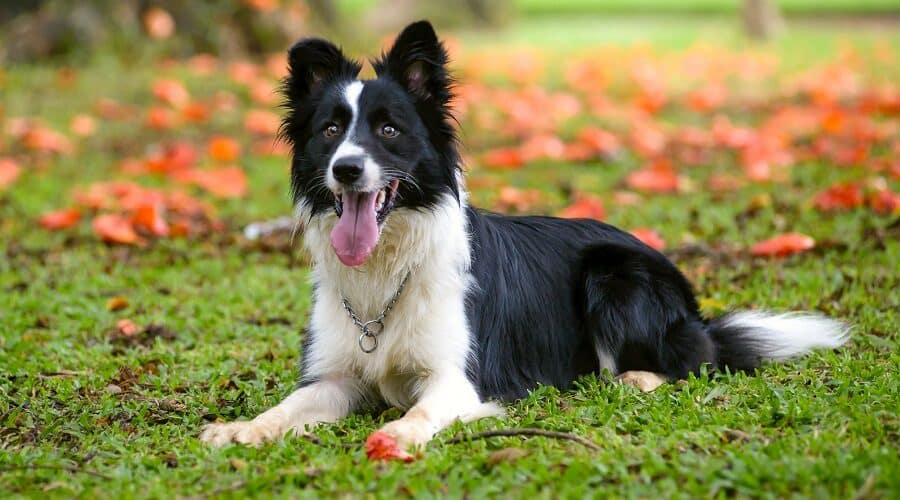

Golden Retrievers often exude friendliness as they engage with people and other animals. Part of this comes down to confidence. Goldens tend to have a cheery outlook that helps them navigate the world with
ease. Moreover, a golden is almost always willing to sit for pets for as long as a person wants.
Breed Characteristics
-
Height: 22 to 24 Inches
-
Weight: 55 to 75 pounds
-
Physical Characteristics: Well-balanced body; straight or wavy coat; light to dark golden shades.

With their warm eyes and cheerful grins, Labradore Retrievers are the picture of friendliness. Labs were bred to be companions—first to fishermen and then to hunters. They adore being around people, and they
maintain a sweet, carefree nature. But they are high-energy dogs that need vigorous exercise every day.
Breed Characteristics
-
Height: 22 to 25 inches
-
Weight: 55 to 80 pounds
-
Physical Characteristics: Athletic build; short, dense coat; colors include black, chocolate, and yellow.

Beagles are a cheerful breed that truly enjoys spending time with people. They are fairly active and love playing fetch or going on long walks with their humans. They’re always down to have some fun and are
happy to snuggle with their favorite people at the end of the day.
Breed Characteristics
-
Height: Up to 15 inches
-
Weight: Up to 30 pounds
-
Physical Characteristics: Solid build; colors include black and tan, brown and white, and more

Border Collies aim to please. They are constantly in tune with their humans, which helps them succeed in dog sports, such as agility and flying disc, as well as everyday training. But minimizing a border collie's desire to
herd everything in sight is a must, as this can cause them to nip people.
Breed Characteristics
-
Height: 18 to 22 inches
-
Weight: 30 to 55 pounds
-
Physical Characteristics: Rough or smooth coat; can be solid, bicolor, tricolor, merle or sable

Social Media Connections